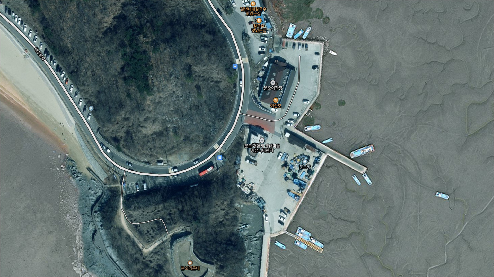
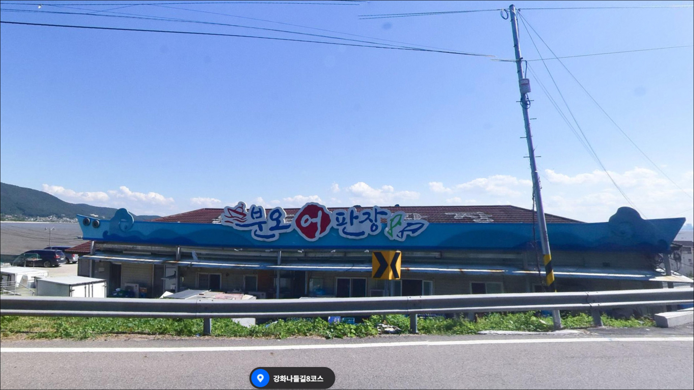
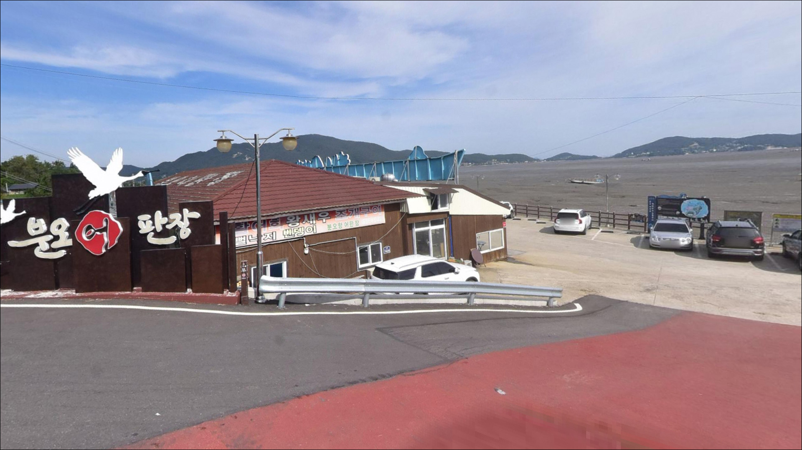
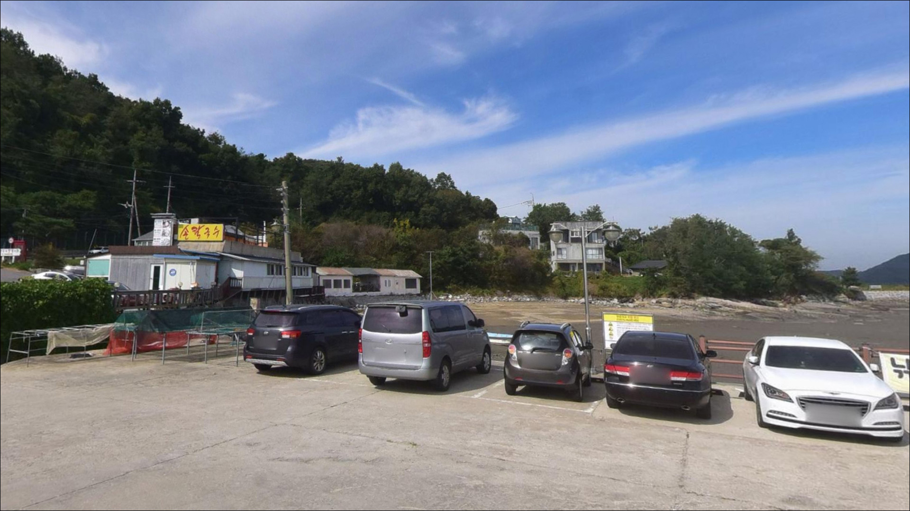
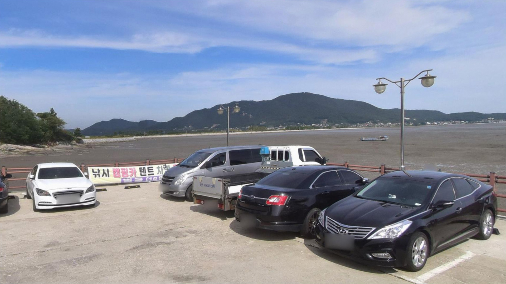
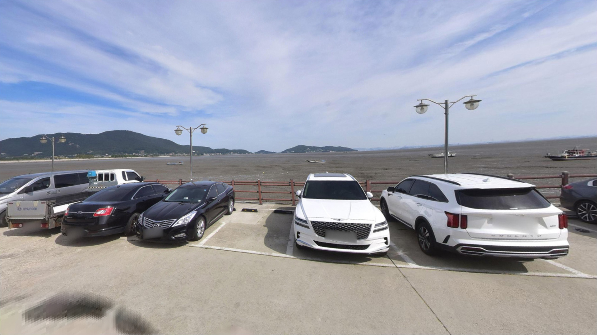
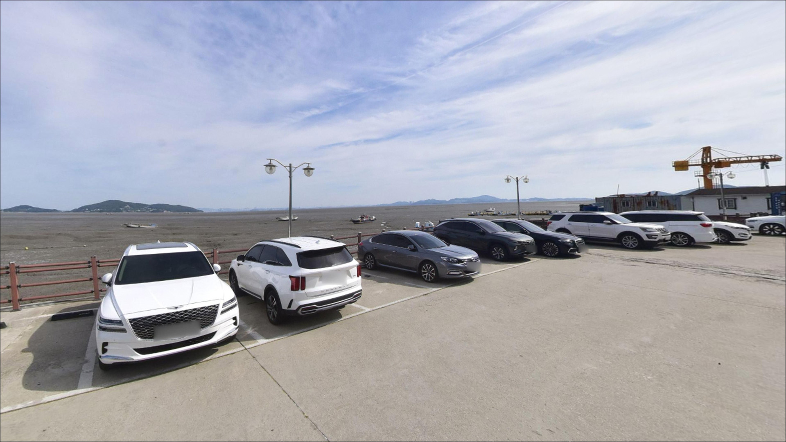
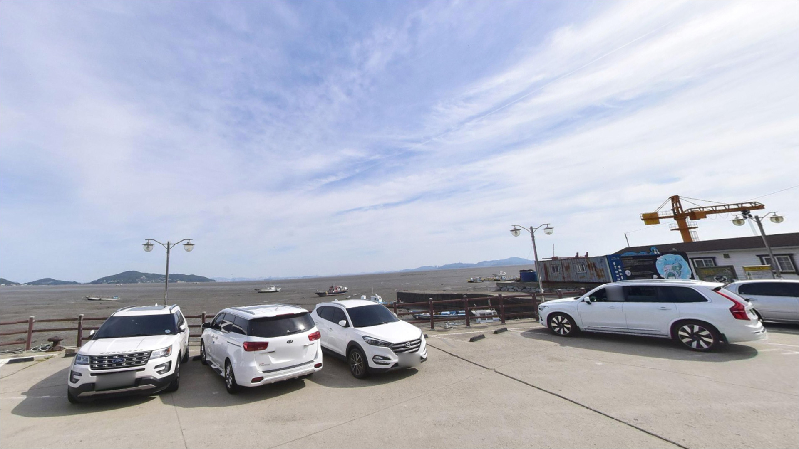
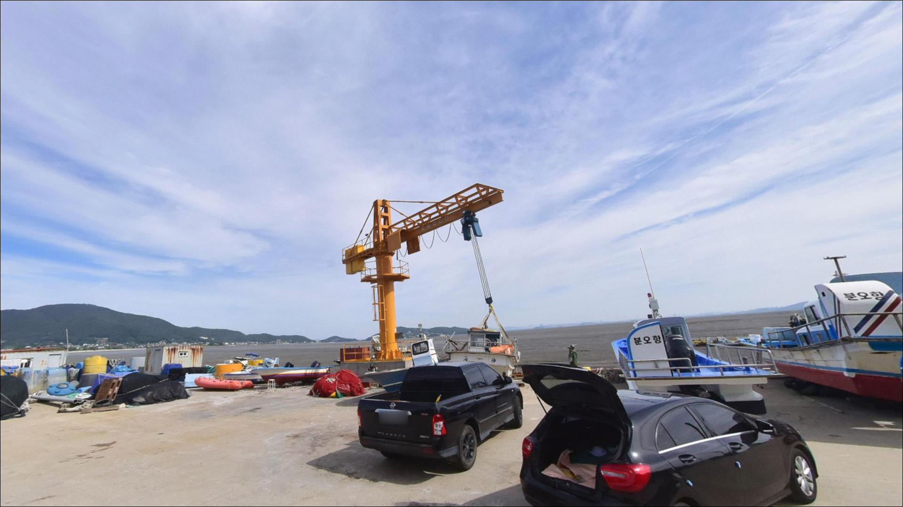

분오항, 강화도 인천 강화군 한적한 분위기 속 차박, 낚시를 함께 하기 좋은 곳
이 페이지에는 광고(제휴 링크 포함)가 있으며, 광고 링크를 통해 구매하면 운영자가 판매 수익 또는 수수료를 받을 수 있습니다. 포인트 사진: 카카오맵 스카이뷰·로드뷰. 이 페이지의 지도·사진 이미지는 카카오맵의 실제 서비스 이미지와 다를 수 있습니다.


인천 강화군 화도면 사기리 520-8
분오항에서 가장 흔한 실수는
물때 확인 없이 진입하는 것입니다.
강화도 조차는 7~9m에 달해,
간조 전후에는 항 전면 갯벌이 넓게 드러나
채비를 던질 수 있는 낚시 자리 자체가 사라집니다.
이 글은 분오항의 물때 판단 기준, 진입 환경,
낚시 방식 적합성을 중심으로 정리합니다.
조황 단정이나 특정 어종 보장은
이 글의 범위에 포함되지 않습니다.
분오항은 2004년 어촌정주어항으로 지정된
강화도 남단의 소형 어항입니다.
분오어판장과 선착장이 붙어 있는 생활형 항구이면서,
분오리돈대·동막해변과 맞닿은
해안 관광권의 끝자락에 위치합니다.
만조 전후에는 원투낚시와 찌낚시가 가능한
서해 생활낚시 스타일의 포인트입니다.

1. 진입 동선과 포인트 접근성
분오항까지는 포장도로로 차량 진입이 가능합니다.
동막해변 방면에서 이어지는 도로 폭은
비교적 양호한 편이나,
주말이나 낙조 시간대에는 관광 차량이 몰려
혼잡을 감안한 출발 시각 조정이
필요할 수 있습니다.
분오어판장 앞에는 넓은 공터형 주차 공간이 있어
차량 대기는 비교적 여유 있는 편입니다.
다만 어판장 운영 시간대에는
상가 손님·수산물 작업 차량이 함께 오가는 구조라
낚시 장비와 차량이 작업 동선을 막지 않는
위치 선정이 현장 진입의 기본입니다.
소형 어항 특성상 방파제와 선착장 내부는
어선 계류 구역과 낚시 가능 구역이
명확하게 표시되지 않는 경우가 있습니다.
진입 후 현장 안내판과 어선 계류 상황을 먼저 확인하고
자리를 잡는 것이 이 포인트의 기본 진입 방식입니다.

2. 차박 환경과 야간 체류 여건
분오어판장 인근 공터는 짧은 대기형 차박으로
활용 가능성이 있는 구간입니다.
다만 어판장 운영이 끝난 이후의 야간 상황은
현장에서 직접 확인해야 하며,
장기 취사·장비 전개형 체류는
어항 분위기상 눈에 띌 수 있습니다.
분오항은 서쪽~남서쪽 방향으로 서해에 열려 있는 구조라
서풍과 남서풍이 강한 날은 체감 바람이 세집니다.
야간 조명은 어판장 간판과 기본 가로등 수준으로
추정되며, 방파제와 선착장 위 낚시 시에는
개인 헤드랜턴이 필수입니다.
분오리돈대(인천광역시 유형문화재)가
항 바로 위쪽에 위치합니다.
돈대 성벽 인접 구역에서의 야영·취사는
문화재 보호 원칙상 제한될 수 있으므로,
현장 안내판을 먼저 확인하고 위치를 정하는 것이
문화재 인접 포인트의 기본 매너입니다.


3. 주변 편의시설 및 인프라 현황
분오항 인근에서 확인된 편의시설로는
세븐일레븐 강화분오리점(사기리 485-1, 24시간)이
가장 가까운 편의점입니다.
동막해변 방면으로 약 2km 이동하면
GS25 동막해수욕장점도 이용할 수 있습니다.
분오어판장에는 점포 9개가 운영 중으로
신선한 해산물 구입과 식사가 가능합니다.
동막해변 인근에도 식당가가 형성되어 있어
낚시 후 식사 연계는 어렵지 않은 편입니다.
주유소와 의원은 반경 3km 내에서
공식 확인 자료가 없으므로,
연료와 비상약품은 출발 전에 준비하는 것이 안전합니다.

4. 물때를 놓치면 낚시 공간이 사라지는 이유와 준비법
분오항 방문에서 가장 먼저 확인할 것은 물때입니다.
조차란 만조와 간조의 수위 차이를 나타내는 지표로,
서해안은 조차가 커 낚시 여건이 물때에 따라
크게 달라집니다.
강화도는 서해 중에서도 조차가 7~9m에 달하는 지역이라,
간조 전후에는 항 전면부 갯벌이 넓게 드러나
낚시 가능한 시간이 만조 전후 1~2시간 구간으로
집중되는 편입니다.
바다타임에서 '분오리항' 기준 물때를 확인하고
만조 전후를 출발 시각으로 역산하는 것이
이 포인트의 기본 전략입니다.
사리 전후에는 조류가 빠르게 흘러
봉돌 무게를 올려도 채비 컨트롤이
어려워지는 상황이 생길 수 있습니다.
분오항은 물때를 맞추지 않으면
낚시 공간 자체가 확보되지 않는 포인트입니다.
이른 새벽 어선 귀항·하역 시간대에는
어판장 주변이 혼잡해질 수 있습니다.
낚시 도중 선박이 이동하면 즉시 자리를 양보하고,
어구에 채비가 걸리지 않도록 주의해야 합니다.
야간 낚시 시 구명조끼와 헤드랜턴은
선착장·방파제 위에서 필수 장비입니다.

5. 지형 기반 낚시 여건 분석
분오항은 강화도 남단 화도면 해안선의 소형 어항으로,
항 전면부는 펄~모래혼합 저질로 추정됩니다.
간조 시 갯벌이 넓게 드러나는 서해 내만형 지형이라
밑걸림이 상대적으로 적어
원투 채비를 멀리 던지기에 부담이 없는 구조입니다.
선착장 끝단과 수로 방향은 항 내부보다
수심이 변화하는 경계 구간이 생길 수 있어,
어종이 모이는 자리로 집중 탐색이 유효한 편입니다.
들물이 들어오면서 조류가 살아나는 타이밍에
망둥어, 숭어, 붕장어 계열이
서해 갯벌형 소항에서 기대해볼 수 있는
대표 어종으로 언급됩니다.
이른 봄에는 광어·노래미 계열의 반응도
기대해볼 수 있는 시기입니다.
분오항은 온라인 조황 기록이 많지 않은 포인트입니다.
방파제 규모가 소형이라 낚시 가능 구간도 제한적이며,
현장 조건은 물때·계절·바람에 따라
변화 폭이 큰 편입니다.
가기 전에 최신 조황은 꼭 검색해 보시기 바랍니다.


6. 분오항에 어울리는 낚시 스타일
원투낚시는 이 포인트에서 가장 현실적인 스타일입니다.
원투낚시란 무거운 봉돌을 달아 채비를 멀리 던져
바닥층 어종을 노리는 낚시 방식입니다.
펄~모래혼합 저질로 추정되는 항 전면부는
밑걸림 부담이 적어
초행 낚시인도 채비 손실 없이 시도하기 좋은 조건입니다.
망둥어와 붕장어는 여름~초가을에 기대해볼 수 있는
어종입니다.
찌낚시도 이 포인트 구조에 어울립니다.
만조 전후 물돌이 타이밍에 조류가 살아나는 구간에서
숭어를 노리는 채비가 유효한 편이며,
항 내부 조용한 구석에서
잡어·망둥어를 노리는 민장대 찌낚시도
서해 소항 생활낚시 방식으로 잘 어울립니다.
라이트 루어는 만조 전후 조류가 살아있는 타이밍에
항 외항 방향에서 시도해볼 수 있는 스타일입니다.
화도면 인근 해안선에서 광어·노래미 계열이
기대 어종으로 꼽히는 점을 참고할 수 있습니다.
가을철에는 서해 소항 특성상
주꾸미도 기대해볼 수 있는 어종 중 하나입니다.
다만 에깅은 갯벌 노출이 넓고 저질이 펄 계열로
추정되어 밑걸림 리스크가 있는 편이라
이 포인트에서는 라이트 루어를 우선하는 것이
현실적입니다.

7. 대안 포인트와 플랜 B 동선
분오항 상황이 여의치 않을 때
가장 먼저 검토할 포인트는
후포항입니다.
강화군이 2025년 낙조 스탬프투어 코스에 포함할 만큼
인지도 있는 인근 포구로,
분오항 현장 정보가 부족할 때
보조 검색 키워드로 함께 찾아두는 방식이 실전적입니다.
길상면 쪽으로 이동하면
선두리 방파제가 있습니다.
광어 낚시로 알려진 포인트로,
수심이 완만하고 조류가 안정적인 편이며
차를 방파제 입구 근처까지 붙이기 좋다는
방문 기록이 있습니다.
지그헤드·다운샷 루어 스타일이 잘 어울리는 구조입니다.
주말에는 낚시 인원이 몰리는 경향이 있어
평일 이른 시간대 공략이 유리합니다.
분오항에서 약 2km 거리의
동막해수욕장 갯바위도
대안으로 고려할 수 있는 곳입니다.
평탄한 지형으로 광어 이동이 잦다는 기록이 있고,
공용 주차장이 별도로 마련되어 있어
진입 여건은 분오항보다 안정적인 편입니다.
처음 화도면 해안선을 찾는 경우라면
동막해수욕장 갯바위를 기점으로 잡고
분오항을 병행 탐색하는 동선이 효율적입니다.

물때 한 번 맞추면
분오항 스타일이 달라집니다
만조 전후를 맞춰 원투 채비를 던지거나
물돌이 타이밍에 찌낚시를 즐기는 낚시인이라면
분오항의 서해 갯벌형 소항 구조가
잘 맞는 포인트입니다.
조황 기록이 많지 않아 탐색 재미가 있고,
어판장 앞 넓은 주차 공간 덕분에
부담 없이 들러볼 수 있는
강화도 남단 생활낚시 스타일의 소항입니다.
반면 물때 확인 없이 간조 시간대에 도착하거나,
분오리돈대 인근 구역에서 야영·취사를
계획하는 경우라면
현장에서 당황할 수 있습니다.
물때 확인, 어선 동선 파악, 문화재 구역 점검,
이 세 가지를 미리 갖추고 간다면
서해 소항 특유의 조용하고
실속 있는 출조가 될 수 있는 곳입니다.
낚시를 마치고 분오어판장에서 해산물로
저녁을 해결하거나,
동막해변 낙조를 보며 차 안에서 하룻밤을 마무리하는
강화도 남단 차박 낚시 일정으로 엮기에도
나쁘지 않은 선택입니다.